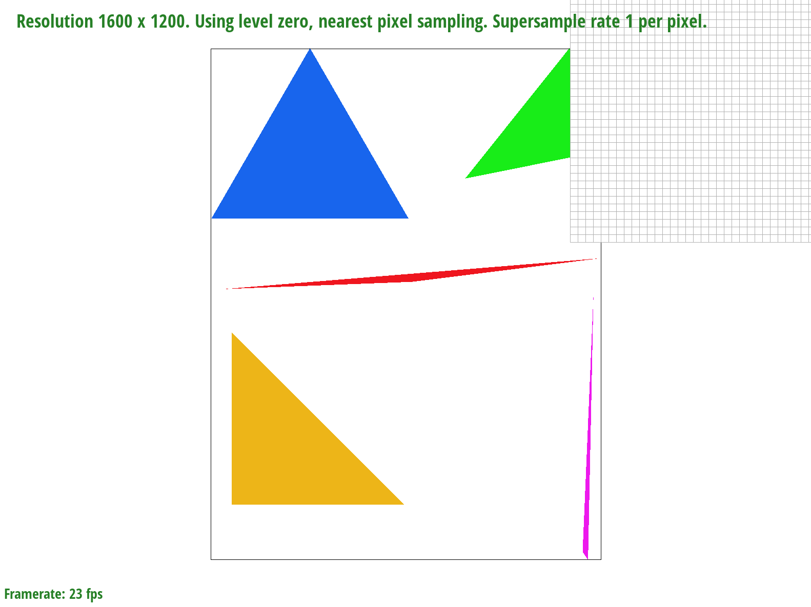

To ensure that the winding order of the triangles is consistent, I take the cross product of two edges, and if the cross product of these two edges is negative, then I swap the non-shared points of the two vectors, resulting in a consistent counter-clockwise winding order. Then, I iterate through each pixel (or subpixel) in the bounding box and perform a line test on the pixel to determine if it is within the triangle. If it is, then I assign the pixel a color in the sample buffer, and render the resulting buffer to the screen. Since I check each point in the bounding box once, my implementation performs exactly as well as an implementation that checks each point once. Below is an image of test4.svg:
